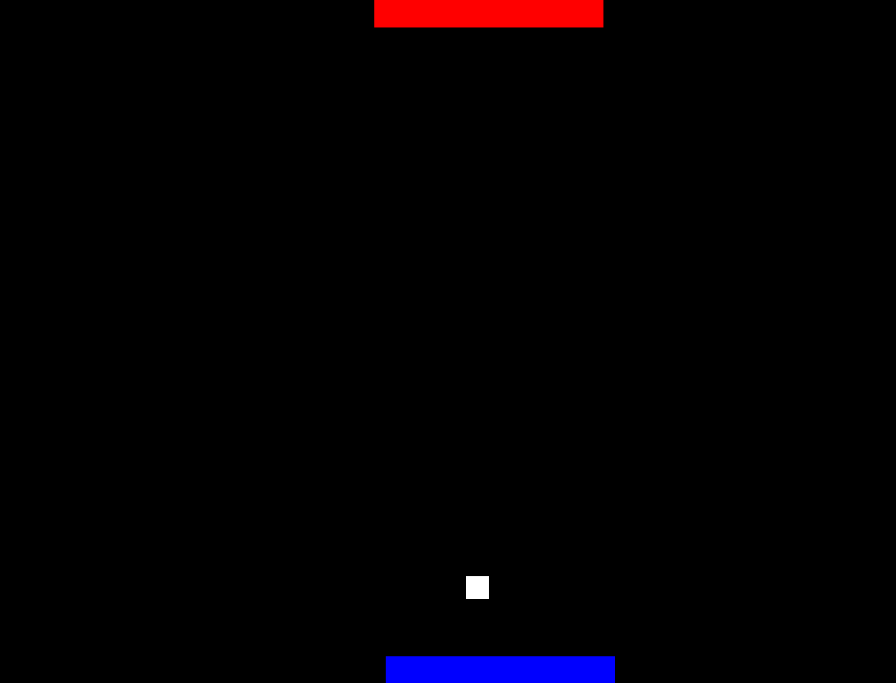

Pong

O Pong foi o primeiro jogo eletrônico já produzido, é um jogo 2-D que simula uma partida de tênis de mesa.
INFORMAÇÕES:
Programador: Caio Guilherme
Assistentes: Pedro Manoel e João Pedro
Tecnologias Usadas